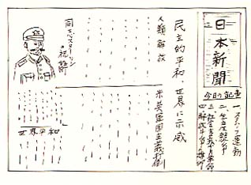

|
第十 壁新開と民主運動
昭和二十一年の元旦がきた。
大尉級以上の幹部将校は、昨年暮より何処
かの収容所に移動させられて、残留将校は中
少尉、準尉、見習士官ばかりとなった。
収容所の雰囲気は変り、旧軍隊の階級意識
は次第に仲間意識となってきた。
元旦はソ連でも仕事を休み、祝日として休
養日だった。
元旦は一皿位は増し料理がついて、黒パン
百ｸﾞﾗﾑ位の増加があってもよさそうと期待して
いた。ところが意外にも寂しい元旦となった。
「本日は、炊事用薪が不足したので、昼食
は取り止めだ…」
この俘虜泣かせの伝達事項が、収容所内を
駈け回った。途端に腹が一度に、空っぽにな
り、急に体から力が抜けて、全身が萎むよう
な衝撃だった。天を怨み、仲間同志でもやり
場がなく、ごねたり拗ねたい気持になるよう
だった。
正月早々の初怒り、初泣きだった。どうせ
今年も禄な年でもなさそうだ。じつと辛抱の
元旦だと、朝粥が胃袋の中で早く消化してし
まわないように、用便以外は体を動かすこと
もなく、滅多に口も利かぬという風にして、
夕食を待つ以外打つ手はなかった。
夕食は、薪の補給ができて、黒パン百五十
ｸﾞﾗﾑ、カプスカースープのほかに、一日五ｸﾞﾗﾑの
配給砂糖を貯めた分で、炊事班が特に腕を振
って作った小さな高梁の甘い団子が、一つ添
えられていた。
老兵が、甘い団子を大事そうに舌の上に転
がして、体全体で味いながら言った。
「今日は正月元旦だ。本来なら雑煮と屠蘇
位はあっても、よさそうだ。それにとりの空
揚げ、かまぼこの彩どり、黒豆の甘煮とまで
は言わないが、それが出来ないのなら昼食抜
き分のパン百五十ｸﾞﾗﾑは、追加配給して貰いた
い。それまでピンはねして、マルチンスキー
は私腹を肥しているに違いない。けしからぬ
奴だ－」
年頭に際して敗戦の惨めさを一段と、思い
知らされたのであった。
正月も過ぎ二月初めの頃から、今まで聞い
たことのなかった「友の会」と言う言葉が、
皆の耳に異様に聞えてきた。
この言葉は、朝鮮人通訳の口から伝わった。
通訳氏は、ソ連制民主主義思想を推進する為、
軍隊の階級制を撤廃し、働く者同士の組織体
として「友の会」を作れと言い出した。これ
が民主友の会の発足だった。
この「友の会」を発足させる起爆剤として、
採用されたのが、壁新聞だった。
二月中頃、医務室の外壁に、プラウダ紙
（共産党中央委員会発行の日刊新聞）位の大
きさの紙に何か大書して貼ってあるのを、大
勢して取囲んでいるので見に行った。その壁
新聞には次のような記事が大書してあった。
「杉野軍医は、患者用の特配パン五百ｸﾞﾗﾑを
銘々の患者には全部支給せず、自分で百ｸﾞﾗﾑづ
つをピン別ねして、飽食しているのが発覚し
た。仲間を裏切り、いまだに特権を笠に着て、
患者の上に胡坐をかいている反動将校だ！！
同志諸君！！反動将校を追放せよ！」
真相の程は不明だったが、一般大衆に反軍
思想を煽動するための手始めに、将校吊し上
げ運動が始まった。
嘉村曹長は、かって市会議員経験者で応召
されていた。従って思想方面にも見識を持っ
ていた。彼は中支戦線から運悪く敗戦直前に、
満州部隊に転属してきた、歴戦の勇士だっ
た。北支では、十九路軍の共産党軍との戦斗
で、思想戦の宣撫工作にも経験があった。そ
の経験からこう説明するのだった。
「共産主義思想は、敗戦前まで、日本では
国禁思想として、断呼として排撃されたので
ある。また赤い思想として、口に出すことす
ら国賊扱いだった。
友の会は、この怖るべき魔の手だ。赤化思
想の触媒の手先である。絶対に騙されてはな
らない。
初年兵や若い兵士は、何れも名誉ある出征
兵士として、お国のみ楯として戦列に加わわ
った者ばかりである。また軍人精神に徹して
きた者ばかりだ。国家にご奉公する思想以外
には、何も識らない絶心無垢の者ばかりだ。」
曹長の熱弁は更らに続いた。
「日本以外のことは、何も知らない青年兵
士達は、思想など教え様では如何ようにもな
るものだ。この感化され易い青年兵士達に、
日本の天皇制軍国主義が、何と愚な無謀なこ
とであったか、それに較べて、ソ連の民主主
義が如何に人民大衆のために、平和と幸福を
もたらしていることかと、またこれは素晴ら
しいことだと宣伝したら、そのまま信じ込む
のは当然だろう。
このようにして、ソ連民主主義を専奉し、
ソ連に忠誠を誓わせようとすることを、目論
んだのが、「友の会」の誕生となったのだ。」
理路整然として分り易く、流石に市会議員
として壇上で熱弁を振った貫禄充分であって、
迫力もあった。
しかし友の会の同志に加入すると、最大の
魅力は、軍服も少しましな中古服が支給され
るし、それに黒パンも百ｸﾞﾗﾑ位は増えるらしく、
時としては重労働を免除され、比較的楽な労
働に回されることもあるらしく、おれも入
るからお前も入らないかと、勧誘の輪は少し
づつ広がって行った。
理論よりもまずパンだ。花より団子だ、と
人間の弱点を突いてくるのだった。
友の会の活動発展の第一歩は、先ず将校吊
し上げから始まった。
凡ての将校は、軍国主義の先達として、一
般大衆人民共を、狩り立てて苦しめ、天皇の
名を借りて横暴を極めた人民の敵だとした。
識らぬ間に、私等将校は戦争犯罪の反動将
校にのし上ってしまっていた。それでも作業
に行くときは、何時も作業隊長で、指揮者
（コマンデイル）としての総括責任を負わさ
れ、その責任を追求されるのだった。
労働は率先して、溝掘りや建造物の取り毀
し、家屋建て直し作業、道路舗装工事などの
重労働に隊員と共に従事したことに、変りは
なかった。隊員は私の指示命令に従って協力
して働いた。私はノルマには敢えて固執しな
かった。
ソ連共産党では、何処の職場でも「ノルマ」
（作業定量基準表）という厳しい労働量の基
準表を設けていた。ノルマ表は全国一律で、
色々の作業種類別に注釈がついて、配布され
ていると聞いた。
このノルマは我等抑留者にも、ソ連人と変
りなく適用されて強制されたのである。
ノルマは正常な環境の中で、正常な食事を
摂って、健康な体調であることが、絶体必要
条件であると思われるが、そんな正論は勿論
我らには適用されない。正常な食事を与えず、
病気は三十八度以上の発熱がない限り病気と
は認めず、ノルマだけを強制するという不条
理は、到底理解が出来ないのである。これは
罪人懲罰の奴隷扱い同然で、人権無視の極悪
非道と言わざるを得ない。
餓死寸前の者や、栄養失調者にまで、ノル
マを強要して酷使することは、最早人権蹂躙
である。ソ連民主主義は日本軍国主義以上に、
人間の尊重を軽視する。戦争は終了して、今
日は平和の時代に戻った筈である。しかしこ
んな言い分は、ソ連下級監督者には、所詮理
解出来る筈もなく、
「お前達は俘虜だぞ、何をブツブツ言うの
だ。おれ達もお前達と同じように働いている
ではないか、もっと働け、ラボートだ。ヤポ
ンスキープロホ（不良） ラボート！！
俘虜地獄で、現世の道義などあろう筈もな
い。空腹を訴えても、ただそれだけで、反ソ
分子として、投獄か懲罰労働かが待っている
だけだった。
夕食後「友の会」の連盟員たちは、反省会
と学習会に将校の出席を要求してきた。友の
会連盟員は「アクチブ」と言う肩書を持った
者が巾を利した。アクチブは民主運動の前衛
戦士で、指導者気取りで革命分子を気負って
いた。 彼等は、一般の者のボロ服に較べ、
中古品のさっぱりした服を着用し、何時の間
にか小賢しい横柄な顔つきになっていた。そ
うして彼等は昨年暮れに消えた山崎隊長と、
大尉幹部将校の代役を務める地位に、のし上
っていた。
学習会では、
「みなさん、わがソ連国は、労働者を主人
公とした、プロレタリヤ（無産階級）独裁の
民主主義の素晴らしい国です。
日本や米英帝国主義は、やがて崩壊しても、
ソ連は永遠です。ソ連を祖国と思い、ノルマ
の実績を挙げねばなりません。」
と演説を始めるのである。そうして最後に
「軍国主義や帝国主義は必ず、人民の敵とな
り崩壊するのです。」
と絶叫して一同の反省を求めるのであった。
しかし聴衆は誰れも同調しょうとする者はい
なかった。すると特攻飛行隊出身の山村中尉
は発言を求めて、
「おれは、そうとは思わぬ。諸君等は誰れ
からそのように教わったか知らぬが、そう思
うのは諸君等の勝手で良かろう。思想信条は
今は自由になったからね－。強制できないよ！
ソ連がそれ程立派な民主主義国家なら、何故
に我等日本兵を、早く帰還させないのであろ
うか、不思議とは思わないか。」
反省会は何んでもアクチブ達の学習の復習
場とすることと、将絞吊し上げが目的であっ
たが、その効果は得るところなく終っていた。
友の会では、やがて「日本新聞」がその機
関紙として発刊されることになった。
日本新聞に掲載された主張、啓蒙事項は、
かつての軍人勅諭以上に尊重順守される可き、
至上のものと思わせる雰囲気を創っていた。
日本新聞の執筆者は、諸戸文夫、相川春喜、
袴田某などの氏名が、記載されていた。彼
等は何れも、日本人の共産主義者として、知
られていた人物だった。
諸戸文夫のペンネームを読んだとき、これ
は「モロトフ」と云うスターリン内閣の外務
大臣の名前だと、直感した。
彼等執筆者は、タス通信の日本特派員で、
在日数ケ年の経験を有する「コバレンコフ」
中佐の指揮をうけて記事を書いていることは、
朝鮮人通訳の言葉から漏れて、うすうす知っ
ていた。
コバレンコフは、日本俘虜にソ連製民主主
義を吹き込んで日本に帰そうと、企画したと
思われる。
諸戸文夫、相川春喜、袴田などほか数名は、
戦前日本官憲の弾圧から逃れて、ソ連に亡命
していたことは明瞭だった。特に袴田などの
名は、学生時代から私の記憶に残っていた。
彼等は、各地区に政治学校を創設して、日
本俘虜の中から、革新分子に感化し易い人物
を選んで、思想教育をした。彼等はその政治
学の講師であり、民主運動の「オルグ」（党
から派遣された者）であり、シベリア民主運
動の最高指導者でもあった。またソ連共産党
からの庇護も厚い客分でもあった。
指導項目の重なるものは、反軍思想、反帝
国主義、そうして米英打倒、天皇制打倒であ
った。
昭和二十一年三月五日の第五ラーゲルの壁
新聞掲載事項は、次の項目が掲げられていた。
民主主義綱領
一、日本軍国王義打倒
二、戦争指導者将校罪状告発
三、ソ連中心の民主主義思想の啓発
四、ソ連五ケ年計画達成への協力参加
五、米英帝国主義打倒
壁新聞の提唱する事項は、その頃一般には
耳慣れない用語ばかりで戸惑いを感じたが、
段々と慣れて来ると、革命用語の持つ意味も
少しづつ解ってきた。
日本新聞は、この綱領に簡単な解説欄も附
記していた。
今までの日本は、軍閥専横の侵略国であっ
た。戦争に勝ったソ連は、人民本位の民主主
義国家であったと云うような意味の解説をし
てあった。
綱領の四を読んだ老兵が、突然周囲の者に
訊ねた。
「それでは、綱領の四のソ連五ケ年計画達
成への協力参加と云うことは、この五ケ年計
画が終るまでは、日本に帰還されないと云う
意味が含まれていると云うのかね？」
と心配の余りこんな質問が飛び出したので
あった。すると傍の同年兵が、得意そうに、
「勿論そうだよ、但し五ケ年計画に貢献し
た功績の順に、帰還が許されることになろう
よ。」
今度は別の中年兵が、
「優秀労働者と認められると、帰還の順番
が速くなることは間違いない。昨日作業現場
で出合った第十ラーゲルの者が言っとったも
んな－。
民主連盟員から、優秀労働者として、収容
所長あてに推薦された応召上等兵が、昨日帰
還の途に就いたと、噂されている。何と要領
の良い奴もおったものだ・・・。」
聞いていた者は、溜息ついて羨ましがって
おると、また別の分別顔した老兵が、
「第十ラーゲルから帰還と見せかけ、本人
は数百キロも南にある「アルマアタ」のコル
ホーズ（集団農場）に転属させられていたと
も噂がある、あまり当になるものか、」
居合せた者は、ウアーと笑い出したが、
また深刻な瀕になった。
日本新聞の記事は、俘虜に対しては、聖な
るバイブルであり、昔の軍人勅諭にも匹敵す
る絶体的権威のものであった。従ってこれを
批判したり少しでも反駁非難でもしたら、何
時の間にか反動分子のレッテルを貼られるこ
とになる。
場合によっては、反ソ分子として、懲罰収
容所に回わされることもある。このことを次
第に誰でもが感付くようになり、記事の受け
取り方には、慎重な態度になって、回覧の日
本新聞を読むようになった。

|